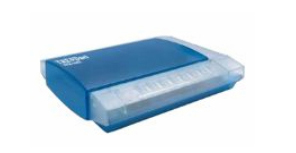

|
Home
| Profile
| Engineering Projects
| Designs
| Animations
|
STOVETOP COMMUNICATION DEVICE
|

The voice modem allows the PC to place calls to the user’s cell phone and also enables the PC to receive telephone calls. A voice modem is necessary since the program communicates with the user by playing voice recordings which cannot be transmitted to the cell phone using Ethernet or wireless modems. This modem only connects when a phone call is made, so it does not drive up the homeowner’s telephone bills.
|
|